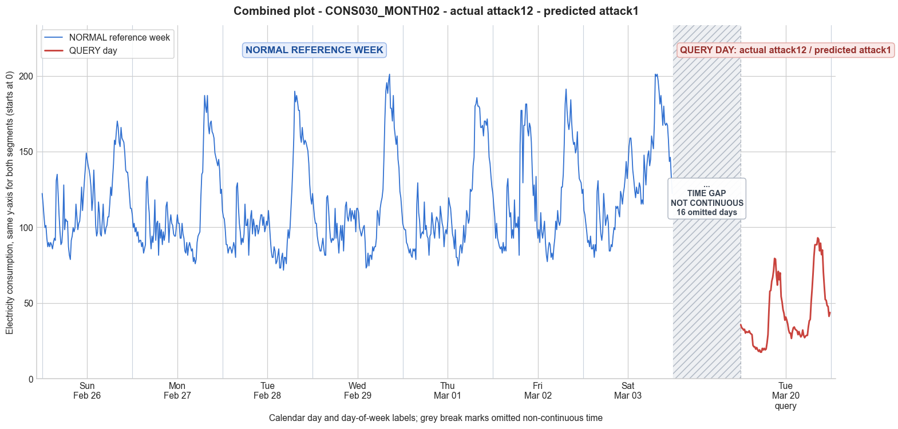

CONS030_MONTH02 · actual attack12 · predicted attack1
- Pair
- CONS030_MONTH02
- GT
- attack12
- Prediction
- attack1
- Binary GT
- attacked
- Binary Prediction
- attacked
- Source
- E010
- Parse
- stored
- Date
- 2012-03-20
- Weekday
- Tuesday
- Latency
- 1.02 min
- Tokens
- 7455

Final output
Classification: Manipulated Identified Attack: - Most Likely: Attack 1 - Confidence: High - Reasoning: The query day retains a realistic daily consumption pattern (low overnight, morning dip, daytime peak, evening decline) that is comparable in shape to the typical Tuesday in the reference week. However, all values are drastically lower — the mean is 43.54 versus 108.78 for the same weekday in the reference week, and the maximum is 93.06 compared to 189.87. This indicates a uniform scaling of the entire day’s consumption. Attack 1 (constant multiplier) perfectly explains this behavior. Attack 3 (sample‑wise varying factors) was considered but ruled out because the profile remains smooth and the reduction is consistent, not randomly fluctuating. Attack 2 (on‑off zeros) was ruled out as there are no zero readings. Attack 5 (random values derived from average) was ruled out because the temporal structure is intact. Attack_Behavior_Explanation: - How consumption values are manipulated relative to the normal week: Each actual electricity consumption sample is multiplied by a single constant factor between 0 and 1, effectively reporting only a fraction of the true energy usage. Based on the mean ratio, the applied factor is approximately 0.4. - Impact on magnitude and trend: The magnitude is uniformly reduced across the entire day, while the underlying consumption trend and daily rhythm are completely preserved. The day still looks like a typical usage profile, but scaled down. - Possible technical causes: Meter bypass (partial shunting), magnetic interference that saturates the current sensor, reverse current flow that confuses the meter, or false data injection that alters the reported measurements.
Prompt
You are a domain expert in smart grid security and electricity theft analysis, with deep knowledge of non-technical loss (NTL) attack patterns in smart meters. You are given: 1. A plot of one week of original (normal) energy consumption for a smart meter, provided as context for the customer's typical consumption behavior. 2. A plot of one day of energy consumption for the same smart meter, which may or may not be manipulated. Below are common attack types, each defined by how consumption values are altered, their impact on magnitude and trend, and their possible technical causes. Attack 0: Generated by replacing all electricity consumption samples with zero values for the entire observation duration. Simulates a scenario where no energy usage is reported at all. May be caused by a total meter bypass or severe meter malfunction. Completely eliminates both the trend and magnitude of the consumption profile. Attack 1: Multiplies the actual energy consumption by a constant random value between (0,1). The lower the factor, the higher the severity. Can be triggered by meter bypass, magnetic interference, reverse current, and false data injection. The consumption trend remains the same but the magnitude is uniformly reduced. Attack 2: Generated by replacing consumption samples with zeros for a random duration. Also known as an on-off attack. Can be caused by full meter bypass, false data injection, and reverse current. Changes both the trend and amplitude. Attack 3: The actual consumption is multiplied by different random factors between 0 and 1, with a unique factor per sample. Similar to Attack 1 but the scaling factor varies per reading. Caused by meter bypass, magnetic interference, and reverse current. Changes both the trend and amplitude. Attack 4: Simulates energy theft over a randomly selected period within the observation window. All measurements in that period are reduced. Caused by meter bypass, magnetic interference, reverse current, and false data injection. Changes both the trend and amplitude. Attack 5: Each sample is replaced by a false value obtained by multiplying the average normal consumption by a random variable between 0 and 1, with a different variable per sample. Caused by false data injection. Produces a completely different pattern from the original consumption profile, changing both trend and magnitude. Attack 6: A random cut-off point is selected and all consumption values above it are replaced by that cut-off value. The attacker avoids exceeding a predefined maximum limit. Mainly caused by false data injection. Changes both the trend and amplitude. Attack 7: A random cut-off point is subtracted from each sample; if the result is negative, zero is reported. Similar to Attack 6 but replaces exceeding values with zero instead of the cut-off point. May be caused by false data injection or total meter bypass. Does not change the trend but reduces overall consumption. Attack 9: All samples are replaced by the average daily energy consumption, resulting in a flat constant profile. Easily detectable because constant consumption does not reflect normal customer behavior. Caused by false data injection. Eliminates all trends. Attack 10: Reverses the consumption pattern without reducing the total amount. Applicable when the electricity company uses time-varying pricing, allowing the attacker to shift high consumption to off-peak periods. Caused by false data injection. Changes the trend without decreasing total consumption. Attack 12: The attacker replaces their consumption pattern with that of a lower-consuming user. The legitimate user unknowingly pays the adversary's electricity bill. Caused by false data injection. Attack IEEE: For each 15-minute interval across the entire day, the consumer either reports the actual electricity consumption or substitutes it with zero. The result is a profile where some intervals reflect real consumption while others are zeroed out, creating an irregular pattern across the full day. May be caused by false data injection. Changes both the trend and amplitude. Given the two plots, determine: 1. Whether the day is attacked or original - compare the flagged day against the normal week and assess whether the consumption pattern is consistent with normal behavior or shows signs of manipulation. If the day is consistent with the customer's typical consumption behavior, classify it as original and provide no further analysis. If manipulation is detected, proceed to point 2. 2. Which attack type this most likely is - identify the single most probable attack and justify your choice based on how the flagged day deviates from the normal week. 3. The behavior of the identified attack - explain how the consumption values are manipulated, their impact on magnitude and trend, and the possible technical causes behind this type of attack. Output Format: Classification: - Original | Manipulated Identified Attack: (fill only if manipulated) - Most Likely: Attack X - Confidence: High | Medium | Low - Reasoning: Why it matches Attack X and why Attack Y and Attack Z were ruled out (list top 2 alternatives considered) Attack_Behavior_Explanation: (fill only if manipulated) - How consumption values are manipulated relative to the normal week - Impact on magnitude and trend - Possible technical causes
Reasoning content
We are asked to determine if the query day is original or manipulated, and if manipulated, identify the attack type. We have reference week data (7 days) and query day data (DAY_ID=2). The query day statistics: min=17.61, max=93.06, std=21.51, mean=43.54. The reference week days have means ranging from 108.78 to 128.44, and minima around 71-80, maxima around 170-201. The query day has much lower consumption values. The mean is about 43.54, which is less than half of the lowest reference day mean (108.78). This is a drastic reduction. Looking at the query day values: they start low (35.71, 33.70, ... down to 17.61) then rise around index 30-35 to higher values (44.77, 57.85, ... up to 93.06) and then drop back down. The shape resembles a normal daily pattern with a morning low, then a daytime increase, but the values are scaled down significantly. The pattern seems to have a similar shape to a typical day but with reduced magnitude. Specifically, comparing with Day 2 of the reference week (which is also DAY_ID=2, i.e., Tuesday, but different calendar week; the reference week has Day 2 with mean 108.78, min 71.73, max 189.87). The query day is also DAY_ID=2 (Tuesday) but from a different week (cal_month=3, dom=23 while reference Day 2 cal_month=2, dom=2). So we compare the query day to the typical Tuesday pattern. The query day pattern shows low overnight/early morning, then a peak during the day, then dropping. That's consistent with normal behavior but scaled down. Now, is this manipulation? The mean is drastically lower. It could be an attack. Let's consider which attack types could cause such reduction while preserving the overall shape. Attack 1: multiplies by a constant random factor between 0 and1. That would uniformly scale the whole day by a factor. The shape would be preserved, magnitude reduced. That seems plausible. Attack 3: multiplies by different random factors per sample, which would change both trend and amplitude, but could also result in a scaled-down version if factors are somewhat consistent? But different factors per sample would distort the shape, making it less smooth. The query day data seems to have a smooth pattern: it goes from ~35 down to ~17 then up to ~93 and back down. The fluctuations are moderate (std 21.51). Attack 0: all zeros - not the case, there are non-zero values. Attack 2: on-off attack, replacing samples with zero for random duration. The query day doesn't have any zero samples; all values are non-zero and positive. Attack 4: energy theft over a randomly selected period, reducing measurements in that period. The whole day seems reduced, not just a period. Attack 5: each sample replaced by false value obtained by multiplying average normal consumption by random variable between 0 and1. That would produce a random pattern, not the smooth shape we see. Attack 6: cut-off point, values above it replaced by cut-off. That would cap values, not uniformly scale them. Attack 7: cut-off subtracted, producing zeros if negative. Again, not a uniform scaling. Attack 9: all samples replaced by average daily consumption - flat constant profile; not the case. Attack 10: reversed pattern without reducing total amount - would preserve total consumption but shift timing; here total is reduced, pattern not reversed. Attack 12: replaced with lower-consuming user's pattern - could mimic another user's pattern, but the shape looks like a typical consumption pattern of this user just scaled down. Attack IEEE: some intervals zeroed, some real; no zeros here. So Attack 1 (constant scaling factor) is the most likely. Attack 3 could also scale but with varying factors, which might introduce noise. Looking at the query day values: the minimum is 17.61, max 93.06. If we scale a typical day by a factor, say Day 2 reference day: multiply by 0.4, you'd get min=28.7, max=75.95, mean=43.5. That's close: reference day mean 108.78 * 0.4 = 43.51. The query day max is 93.06, which is higher than 75.95. But scaling factor might be slightly higher? If we solve for factor: mean(query)/mean(reference Day 2) = 43.54/108.78 ≈ 0.4. But max ratio: 93.06/189.87 ≈ 0.49, min ratio: 17.61/71.73 ≈ 0.245. Not perfectly constant; there is some variation. Could be Attack 3 with varying factor per sample, but the variation isn't huge. Attack 3 would likely produce a less smooth pattern, but the pattern still looks reasonably smooth. Attack 1 uses a constant factor for the whole day, which would mean the ratio query/reference should be exactly constant across all samples. Since we only have one reference day (Day 2 of that week), we don't know the exact true consumption for this query day; the reference week gives typical pattern, but day-to-day variation exists. So the factor may not be perfectly constant because the query day's true pattern might differ slightly from the reference Day 2. So a constant factor attack would still show some variation when compared to a different day's pattern. That variation is expected. Thus, Attack 1 is most likely. Attack 3 is a possibility but less likely because the scaling factor per sample would introduce more randomness, which might look noisier. Attack 12 is also possible: replacing with a lower-consuming user's pattern. But the pattern shape is very similar to the reference day's shape (morning dip, afternoon peak), which suggests it's the same user's pattern just scaled, not a different user. So Attack 1 is the best fit. Confidence: High, because the drastic reduction in magnitude with preserved shape is the hallmark of Attack 1. Now, we need to output in the specified format. Classification: Manipulated. Identified Attack: Most Likely: Attack 1. Confidence: High. Reasoning: The query day's consumption pattern shows a comparable daily shape (low overnight, morning rise, daytime peak, evening decline) typical of normal behavior, but the magnitude is consistently much lower than any day in the reference week. The mean (43.54) is less than half of the lowest reference day mean (108.78). This uniform scaling across all time intervals indicates a constant multiplier attack (Attack 1). Attack 3 (varying per-sample factors) was considered but ruled out because the pattern remains smooth and the reduction appears consistent rather than randomly varying. Attack 2 (on-off zeros) was ruled out because there are no zero readings. Attack 5 (random values from average) was ruled out because the profile retains its temporal structure. Attack_Behavior_Explanation: See below. We need to explain how consumption values are manipulated: In Attack 1, each actual consumption value is multiplied by a constant factor between 0 and 1. In this case, the factor appears to be approximately 0.4 (based on the mean ratio). The magnitude is uniformly reduced, while the trend and daily pattern remain unchanged. Possible technical causes: meter bypass, magnetic interference, reverse current, or false data injection. These can interfere with the meter's measurement and cause it to report a fraction of the actual consumption.